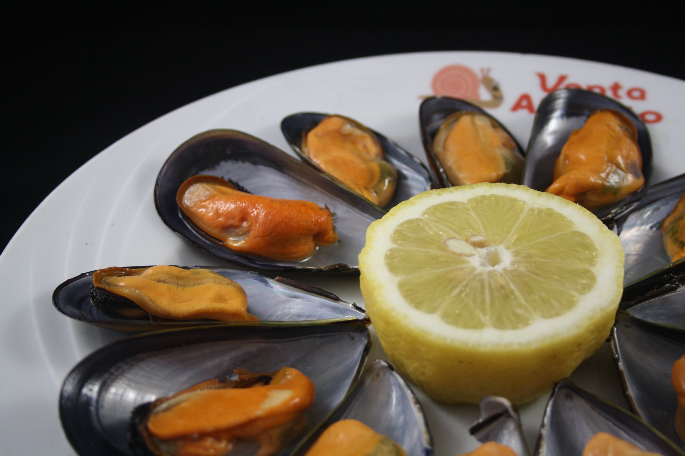
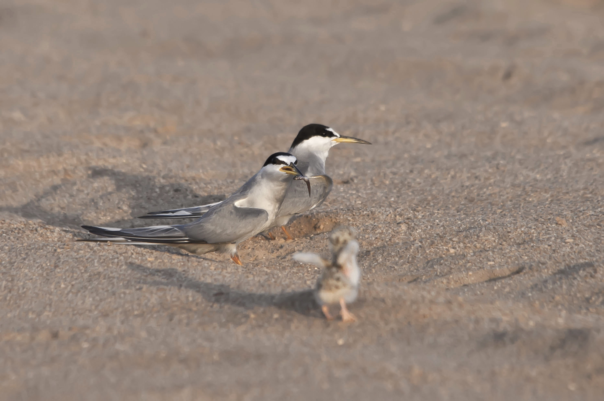
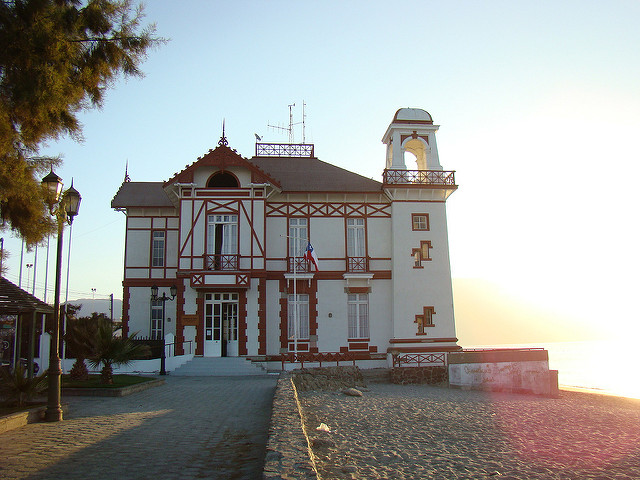
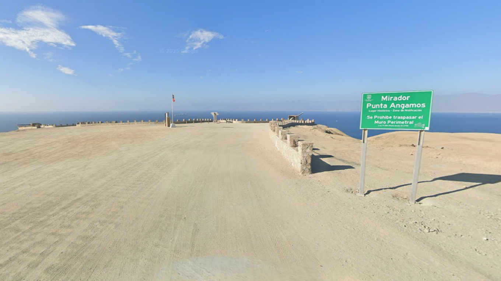

1. El nombre de la ciudad de Mejillones hace referencia al molusco
El nombre “Mejillones” viene a ser plural de “mejillón”, Choromytilus chorus, un molusco de la familia Mytilidae conocido en Chile como «choro» y que se caracteriza por ser un pequeño bivalvo que abunda en las costas del norte del país y que constituyó uno de los alimentos principales de los habitantes aborígenes de la zona. (Ilustre municipalidad de Mejillones, s.f).


2. Cuenta con una extensa plaza dedicada a personajes de Condorito
Dentro de la ciudad, por donde la avenida Andalicán, existe una amplia plaza la cual contiene estatuas de algunos de los personajes de la revista de Condorito.
3. El gaviotín chico, un ave característica de Mejillones
El gaviotín chico es una pequeña ave migratoria que vive principalmente en las costas de Ecuador, Perú y Chile. Su llegada a Mejillones suele ser a mediados de invierno, esto va acorde a según sus necesidades de reproducción y alimentos que hayan en la zona. Lastimosamente, esta ave se encuentra en peligro de extinción debido a aves de presa o la pérdida de su hábitat por la contaminación. (Fundación Gaviotín Chico, s.f).


4. La capitanía es la casa de Jovanka de Romané
Dentro de las teleseries chilenas, han sido varias las casas utilizadas, como por ejemplo la capitanía de puerto de Mejillones, la que sirvió como la vivienda de Jovanka (Claudia di Girolamo) y sus hijas en Romané. (Figueroa, 2018).
5. Mirador Punta Angamos, un lugar histórico
El Mirador Punta Angamos se encuentra aproximadamente a 14 kilómetros al noroeste de la ciudad de Mejillones. En el combate naval de Angamos, ocurrido el 8 de octubre de 1879, se realizó una emboscada de parte de la flota chilena hacia el huáscar y la unión. Tras un intercambio de cañonazos contra el huáscar, en un momento dado un proyectil impactó a su Capitán, Miguel Grau, el cual le provocó la muerte inmediata. Tras esto ocurrido, Chile tuvo mayor control y empezó su proceso de captura del huáscar. (La Tercera, 2025).
